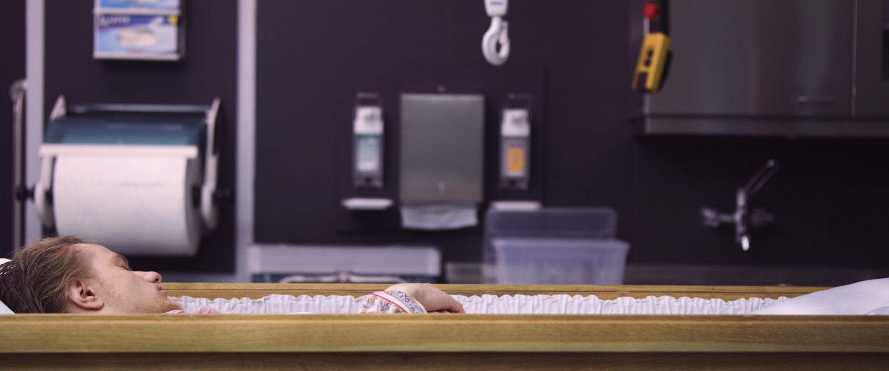
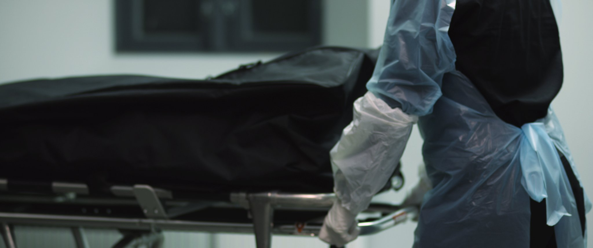
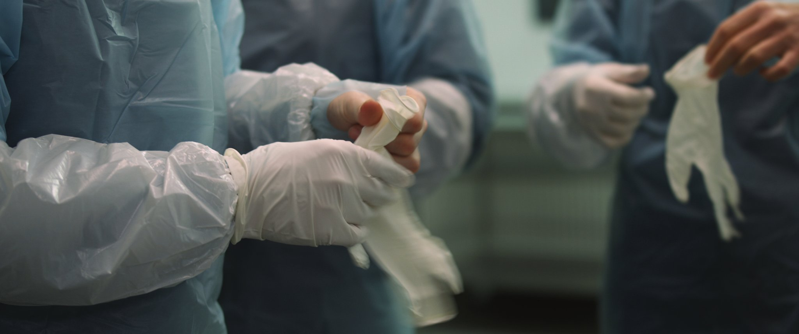
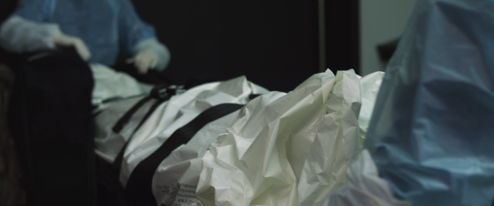
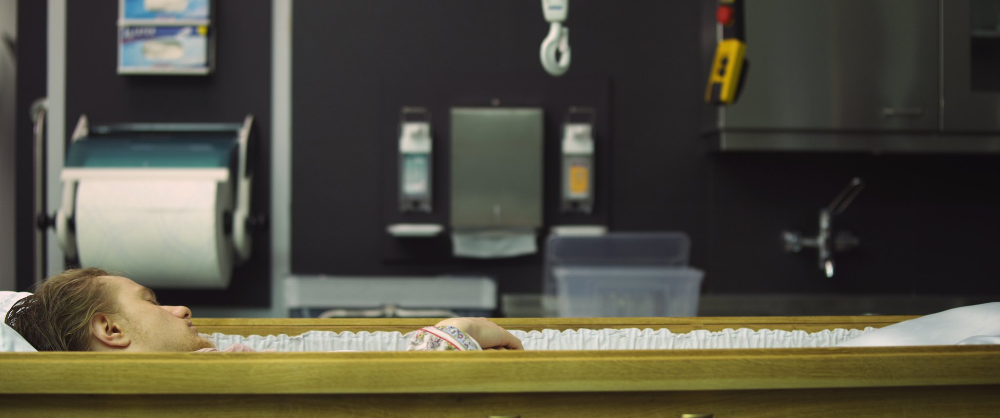
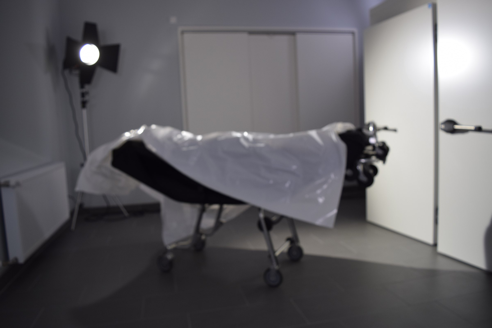

Familycare
2017–2019 · Single-channel video
Familycare is a single-channel video by Nickii Schamborski, 2017–2019.






About the work
"Familycare" documents the ritualistic washing and preparation of a body in a funeral home. The work provides a quiet and contemplative glimpse into what usually remains a hidden process. The documentary film reveals its layers slowly - what first appears as a straightforward documentation, turns out to be much more complex: the deceased is exposed as being alive when they show subtle movements and breathing, and eventually we come to know that all participants are family members. Through careful cinematographic choices and a sterile environment, the work creates a futuristic atmosphere while examining contemporary approaches to death, body care and familial relationships.
Zur Arbeit
Familycare konzentriert sich auf die rituelle Waschung und Vorbereitung eines Körpers in einem Bestattungsinstitut und schafft einen ruhigen und kontemplativen Blick auf einen üblicherweise verborgenen Prozess. Die dokumentarische Arbeit offenbart ihre Schichten langsam - zunächst erscheint sie als geradlinige Dokumentation, bis subtile Bewegungen und Atmung verraten, dass der Verstorbene lebt. Im Verlauf des Videos stellt sich heraus, dass alle Beteiligten Familienmitglieder sind. Durch sorgfältige kinematografische Entscheidungen und eine sterile Umgebung erzeugt die Arbeit eine futuristische Atmosphäre und untersucht dabei zeitgenössische Ansätze zu Tod, Körperpflege und familiären Beziehungen.
Details
- Year
- 2017–2019
- Type
- Single-channel video
- Specs
- 4K cinemascope, stereo sound, 13:24 min. Cinematography / Set direction: hitus Manleitner; Dolly / Sound operator: Caterina Hein, Aaron Ziegler; Support: Christoph Janetzko, Uwe Schulz, Ole Plönnings, Claudia Malecka